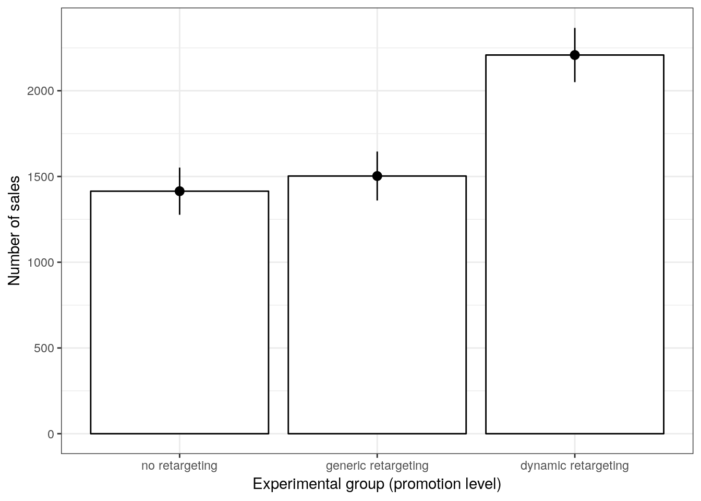
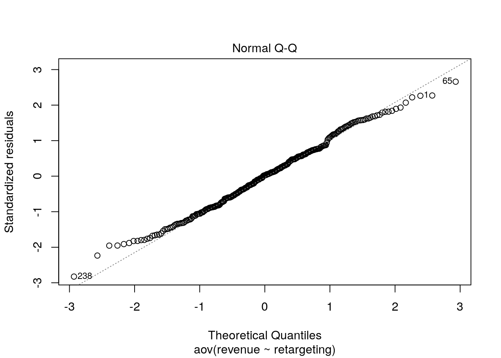

9 Assignments
9.1 Assignment 2 (Hypothesis Testing)
As a marketing manager at a video streaming service, you are interested in the effect of online advertising on the number of streams that a movie receives. To test the effect of online advertising on streams, you select a representative sample of 200 movies and randomly assign 100 movies to be included in an online advertising campaign. The other half of the sample serves as the control group. You run the experiment for one week and collect data regarding the number of streams for each movie from this period. Overall, the data set includes the following variables:
- movieID: unique movie ID
- streams_sd: number of streams in SD-quality
- streams_hd: number of streams in HD-quality
- online_advertising: indicator whether a movie was included in the online advertising campaign (0 = no, 1 = yes)
Apply appropriate statistical methods to answer the following questions:
- Compute the 95% confidence interval for the mean number of streams for movies in SD and HD quality and provide an interpretation of the interval
- Your historical data tells you that the movies in SD and HD quality received 2,600 and 1,700 streams in the previous week, respectively. Please test if the number of streams that the movies received (irrespective of whether they were included in the experiment or not) in the week of the experiment is significantly different from the previous week for SD and HD movies.
- Is there a significant difference in streams between movies that were included in the online advertising campaign and those that were not included? (Please conduct the test for SD and HD movies and also compute the effect size Cohen’s d)
- Is there a significant difference in streams between movies in HD and SD quality? (Please also compute the effect size Cohen’s d)
- Assume that you plan to run an experiment with two groups to test two different advertising strategies. You randomly assign movies to the control and experimental conditions and your goal is to test if there is a significant difference between the groups regarding the number of streams that the movies receive. How many movies would you need to include in each group of your experiment if you assume the effect size to be 0.3 for a significance level of 0.05 and power of 0.8?
When answering the questions, please remember to address the following points, where appropriate:
- Formulate the corresponding hypotheses and choose an appropriate statistical test
- Provide the reason for your choice and discuss if the assumptions of the test are met
- Convert the variables to the appropriate type (e.g., factor variables)
- Create appropriate graphs to explore the data (e.g., boxplot, bar chart, histogram)
- Provide appropriate descriptive statistics for the variables
- Report and interpret the test results accurately (including confidence intervals)
- Finally, don’t forget to report your research conclusion in an appropriate way
When you are done with your analysis, click on “Knit to HTML” button above the code editor. This will create a HTML document of your results in the folder where the “assignment.Rmd” file is stored. Open this file in your Internet browser to see if the output is correct. If the output is correct, submit the HTML file via Learn@WU. The file name should be “assignment2_studendID_name.html”.
Load and inspect data
Let´s load the data first and inspect the contained variables:
## 'data.frame': 200 obs. of 4 variables:
## $ movieID : int 1 2 3 4 5 6 7 8 9 10 ...
## $ online_advertising: int 0 0 0 0 0 1 1 1 0 1 ...
## $ streams_sd : int 2365 1752 1351 2495 3883 3933 3849 2770 1146 3033 ...
## $ streams_hd : int 1432 2305 1197 1112 1364 1202 1363 3502 2047 1104 ...Load packages
Next, we load the packages that we will be using to answer the questions:
library(pastecs)
library(ggplot2)
library(psych)
library(pwr)
library(lsr)
library(reshape2)Question 1
To compute the confidence intervals for SD and HD streams we will need three things: 1) the mean \(\bar x\), 2) the standard error (\(s \over \sqrt{n}\)), and 3) the critical value for a t-distribution (\(t_{crit}\); we will use a t-distribution, because we are not sure of the variance in the population).
#Calculate components of confidence interval formula
mean_sd <- mean(movie_data$streams_sd)
mean_hd <- mean(movie_data$streams_hd)
sd_sd <- sd(movie_data$streams_sd)
sd_hd <- sd(movie_data$streams_hd)
n <- nrow(movie_data)
se_sd <- sd_sd/sqrt(n)
se_hd <- sd_hd/sqrt(n)
df <- n-1
t_crit <- qt(0.975, df)Now the confidence intervals for streams in SD and HD quality can be computed as:
#Interval for SD moviess
ci_lower_sd <- mean_sd - t_crit * se_sd
ci_upper_sd <- mean_sd + t_crit * se_sd
#Interval for HD movies
ci_lower_hd <- mean_hd - t_crit * se_hd
ci_upper_hd <- mean_hd + t_crit * se_hdHence, the CI for SD movies is given by:
ci_lower_sd## [1] 2527.979ci_upper_sd## [1] 2827.851\(CI_{SD} = [2527.97,2827.85]\)
Similarly, the CI for HD movies is given by
ci_lower_hd## [1] 1728.51ci_upper_hd## [1] 1940.52\(CI_{HD} = [1728.51,1940.52]\)
The intervals can be interpreted as follows: If we would take 100 samples, calculate the mean and confidence interval for each of them, then the true population mean would be included in 95% of these intervals.
Question 2
To find out whether our data for SD and HD streams differs significantly from the previous week (2600 for SD; 1700 for HD), we will conduct a one sample t-test. This is appropriate, because 1) our data is on an interval scale, and 2) the sampling distribution can be considered as normally distributed due to the fairly large sample size (n=200; see central limit theorem).
Our null hypothesis states that there is no difference between the quantity of SD/HD streams watched in the current week, compared to the previous week. Rejecting the null hypotheses/accepting the alternative hypothesis would mean that there indeed was a difference between the two weeks.
So for our SD streams we could formulate our hypothesis as follows:
\[H_0: \mu_0 = 2600 \\ H_1: \mu_0 \neq 2600 \]
The same approach can be used for our HD streams:
\[H_0: \mu_0 = 1700 \\ H_1: \mu_0 \neq 1700 \]
We can first have a quick look at the descriptive statistics:
describe(movie_data$streams_sd)## vars n mean sd median trimmed mad min max range skew
## X1 1 200 2677.91 1075.28 2732 2653.68 1064.51 654 5709 5055 0.2
## kurtosis se
## X1 -0.41 76.03describe(movie_data$streams_hd)## vars n mean sd median trimmed mad min max range skew
## X1 1 200 1834.52 760.23 1668.5 1761.9 578.21 246 4305 4059 0.85
## kurtosis se
## X1 0.42 53.76As we can see, the differences between SD/HD and the week before don´t seem to be extraordinary high. To visualize the distribution of the data, we can create histograms:


We can now conduct a one sample t-test to test for significance.
t.test(movie_data$streams_sd, mu = 2600, alternative = "two.sided")##
## One Sample t-test
##
## data: movie_data$streams_sd
## t = 1.0247, df = 199, p-value = 0.3067
## alternative hypothesis: true mean is not equal to 2600
## 95 percent confidence interval:
## 2527.979 2827.851
## sample estimates:
## mean of x
## 2677.915t.test(movie_data$streams_hd, mu = 1700, alternative = "two.sided")##
## One Sample t-test
##
## data: movie_data$streams_hd
## t = 2.5023, df = 199, p-value = 0.01314
## alternative hypothesis: true mean is not equal to 1700
## 95 percent confidence interval:
## 1728.51 1940.52
## sample estimates:
## mean of x
## 1834.515For SD streams, we can conclude that the average number of SD streams watched in this week (2677.92) were not significantly different from the 2600 streams watched in the previous week, t(199) = 1.025, p > .05 (95% CI = [2528; 2828]). This can be seen from the fact that the p-value is larger than 0.05. This is also evidenced by the fact that the null hypothesis (2600) is included in the range of plausible values given by the confidence interval.
However for HD streams we see that the perceived mean in our sample (1834.52) is significantly higher compared to the previous week t(199) = 2.502, p <.05 (95% CI = [1729; 1941]). This can be seen from the fact that the p-value is smaller than 0.05. This is also evidenced by the fact that the null hypothesis (1700) is not included in the range of plausible values given by the confidence interval.
Question 3
First we will analyse whether the advertising campaign had an effect on SD streams. We need to formulate a hypothesis which we can test. In this case, the null hypothesis is that the campaign had no effect on the mean number of streams, i.e. that there is no difference in the mean number of streams between the two populations. The alternative hypothesis states that the campaign did have an effect, meaning that there is a difference in the mean number of streams between the populations. In more formal notation this is:
\[H_0: \mu_0 = \mu_1 \\ H_1: \mu_0 \neq \mu_1\]
We need to transform the variable online_advertising into a factor variable for some of our analyses:
# Transform into factor variable
movie_data$online_advertising <- factor(movie_data$online_advertising, levels = c(0,1), labels = c("no", "yes"))A good way to get a feeling for the data is to compute descriptive statistics and create appropriate plots. Since we are testing differences in means, a plot of means would be appropriate.
# Descriptive statistics for SD streams, split by online advertising
describeBy(movie_data$streams_sd, movie_data$online_advertising)##
## Descriptive statistics by group
## group: no
## vars n mean sd median trimmed mad min max range skew
## X1 1 100 2150.24 897.3 2088.5 2112.99 1188.3 705 4170 3465 0.25
## kurtosis se
## X1 -1.02 89.73
## --------------------------------------------------------
## group: yes
## vars n mean sd median trimmed mad min max range skew
## X1 1 100 3205.59 978.01 3147 3193.69 966.66 654 5709 5055 0.08
## kurtosis se
## X1 0.04 97.8# Plot of means
ggplot(movie_data, aes(online_advertising, streams_sd)) + geom_bar(stat = "summary",
color = "black", fill = "white", width = 0.7) +
geom_pointrange(stat = "summary") + labs(x = "Online Advertising",
y = "Number of SD streams") + theme_bw()
As we can see in both the descriptive statistics and the plot, the mean of the number of streams is higher where online_advertising = “yes”, i.e. for the movies that were included in the marketing campaign. To test whether or not this difference is significant, we need to use a two sample t-test. We use an inpependent-means t-test because we have different movies in each group (i.e., the movies in one condition are indpendent of the movies in the other condition). The requirements are clearly met:
- Our dependent variable is on an interval scale
- Since we have more than 30 observations per group we do not really have to concern ourselves with whether the data is normally distributed or not (see central limit theorem)
- If a movie was inluded in the campaign or not was assigned randomly
- R automatically performs Welch’s t-test, which corrects for unequal variance
Thus we can perform the test in R
t.test(streams_sd ~ online_advertising, data = movie_data)##
## Welch Two Sample t-test
##
## data: streams_sd by online_advertising
## t = -7.9513, df = 196.55, p-value = 0.0000000000001418
## alternative hypothesis: true difference in means is not equal to 0
## 95 percent confidence interval:
## -1317.1019 -793.5981
## sample estimates:
## mean in group no mean in group yes
## 2150.24 3205.59The test is significant, since the p-value is smaller than 0.05, leading us to reject the null hypothesis that there is no difference in the mean number of streams. The p-value states the probability of finding a difference of the observed magnitude or higher, if the null hypothesis was in fact true (i.e., if there was in fact no difference between the populations). In effect, this means that the advertising campaign had an effect on the average number of times a video was streamed. Another thing we can extract from this test result is the confidence interval around the difference in means. Since 0 is not included in the interval, it is not a plausible value, cofirming the conclusion to reject the null hypothesis.
The standardized effect size can be computed using the cohensD function:
cohensD(streams_sd ~ online_advertising, data = movie_data)## [1] 1.124481This maginitude of the effect size (1.12) suggests that the effect of online advertising on the number of SD streams is large.
The same can be done analogously for HD streams:
# Descriptive statistics for HD streams, split by online advertising
stats <- describeBy(movie_data$streams_hd, movie_data$online_advertising)
print(stats)##
## Descriptive statistics by group
## group: no
## vars n mean sd median trimmed mad min max range skew
## X1 1 100 1475.55 395.04 1483 1490.08 436.63 246 2305 2059 -0.34
## kurtosis se
## X1 -0.2 39.5
## --------------------------------------------------------
## group: yes
## vars n mean sd median trimmed mad min max range skew
## X1 1 100 2193.48 863.34 2133 2179.2 962.95 585 4305 3720 0.21
## kurtosis se
## X1 -0.73 86.33# Plot of means
ggplot(movie_data, aes(online_advertising, streams_hd)) + geom_bar(stat = "summary",
color = "black", fill = "white", width = 0.7) +
geom_pointrange(stat = "summary") + labs(x = "Online Advertising",
y = "Number of HD streams") + theme_bw()
Again, the summary statistics and the plot seem to indicate that there is a difference in means. Using the same reasoning as before, we can conclude that we need a two sample t-test to determine whether this difference is signficant (note that two sample t-test means the same as independent-means t-test).
t.test(streams_hd ~ online_advertising, data = movie_data)##
## Welch Two Sample t-test
##
## data: streams_hd by online_advertising
## t = -7.5617, df = 138.71, p-value = 0.00000000000494
## alternative hypothesis: true difference in means is not equal to 0
## 95 percent confidence interval:
## -905.6522 -530.2078
## sample estimates:
## mean in group no mean in group yes
## 1475.55 2193.48Again, the p-value is so low that any sensible signifcance level would lead us to reject the null hypothesis, suggesting that there is a difference in mean the number of streams between videos included in the campaign and those that aren’t.
Calculate the standardized effect size:
cohensD(streams_hd ~ online_advertising, data = movie_data)## [1] 1.069388The meagnitude of the effect size indicates again that this effect is large, although it is somewhat smaller than for SD streams.
Question 4
Next we want to examine whether HD and SD streams have similar numbers on average. The null hypothesis here is that there is no difference in the mean number of HD streams and the mean number of SD streams for the same movies. Because the observations come from the same population of movies, we refer to the difference in the means for the same populaltion as \(\mu_D\) when stating our hypotheses. The alternative hypothesis states that that there is a difference between the streams in HD and SD quality for the same movies. In mathematical notation this can be written as
\[H_0: \mu_D = 0 \\ H_1: \mu_D \neq 0\]
Again, we start with descriptive statistics to get a feel for the data.
# Descriptive statistics for HD and SD streams
psych::describe(movie_data$streams_sd)## vars n mean sd median trimmed mad min max range skew
## X1 1 200 2677.91 1075.28 2732 2653.68 1064.51 654 5709 5055 0.2
## kurtosis se
## X1 -0.41 76.03psych::describe(movie_data$streams_hd)## vars n mean sd median trimmed mad min max range skew
## X1 1 200 1834.52 760.23 1668.5 1761.9 578.21 246 4305 4059 0.85
## kurtosis se
## X1 0.42 53.76# Plot of means
movie_data_long <- melt(movie_data[, c("streams_sd", "streams_hd")])
names(movie_data_long) <- c("stream", "number")
ggplot(movie_data_long, aes(stream, number)) +
geom_bar(stat = "summary", color = "black", fill = "white",
width = 0.7) + geom_pointrange(stat = "summary") +
labs(x = "Group", y = "Listening time (hours)") +
ggtitle("Means and standard errors of streams") +
theme_bw()
It appears that there is a difference in the means. To test whether it is significant, we again need a t-test. However, this time we need a slightly different version of the t-test because the same movies are observed for HD and SD streams (i.e., the same movies are available in both formats). This means that we need a dependent means t-test. This test is also knownas the paired samples t-test. The other assumptions are virtually identical to the independent-means t-test. The test can be executed in R by adding paired = TRUE to the code.
t.test(y = movie_data$streams_sd, x = movie_data$streams_hd, paired = TRUE)##
## Paired t-test
##
## data: movie_data$streams_hd and movie_data$streams_sd
## t = -11.214, df = 199, p-value < 0.00000000000000022
## alternative hypothesis: true difference in means is not equal to 0
## 95 percent confidence interval:
## -991.7133 -695.0867
## sample estimates:
## mean of the differences
## -843.4The p-value is again lower than the chosen signifance level of 5% (i.e., p < .05), which means that we reject the null hypothesis that there is no difference in the mean number of streams in HD and SD quality. Make sure you interpret the p-value correctly. It refers to the probability of observing a difference of the observed magnitude (or larger) between streams in HD and SD quality, assuming that there was in fact no difference between the formats. The confidence interval confirms the conclusion to reject the null hypothesis since \(0\) is not contained in the range of plausible values.
Now let’s find out how strong this effect is.
cohensD(movie_data$streams_sd, movie_data$streams_hd)## [1] 0.9057351A standardized effect size of approx. 0.9 tells us that this effect is large.
Question 5
The question of how many movies we would need to include in each sample of our experiment can be answered quite comfortably with a power calculation function in R.
pwr.t.test(d = 0.3, sig.level = 0.05, power = 0.8, type = c("two.sample"), alternative = c("two.sided"))##
## Two-sample t test power calculation
##
## n = 175.3847
## d = 0.3
## sig.level = 0.05
## power = 0.8
## alternative = two.sided
##
## NOTE: n is number in *each* groupTo achive our desired effect size of 0.3, a significance level of 0.5 and a power of 0.8 we would need to include at least 175 movies per group in our sample.
9.2 Assignment 3 (Hypothesis Testing 2)
The data file contains customer information from an online fashion shop. In an experiment, the customers were exposed to different types of online advertising over the past year (randomly assigned) and now you wish to analyze the results.
The following variables are included in the data set:
- customerID: unique customer ID
- revenue: revenue per cusomer for the past year (in EUR)
- gender: 0=male, 1=female
- retargeting: type of online advertising that the customer was exposed to (3 levels: 1 = no advertising, 2 = generic retargeting, 3 = dynamic retargeting)
- customerRank: ranking of customers according to their expenditure level (low rank = valuable customer, high rank = less valuable customer)
- conversion: indicator variable, indicating if a customer converted in the previous campaign (0 = no conversion, 1 = conversion)
Use R and appropriate analytical techniques to answer the following questions:
- Has the types of online advertising an effect on revenue? Are there significant differences between the individual groups?
- Is the customer ranking significantly influenced by the type of online advertising? Are there significant differences between the individual groups?
- Does the conversion rate in the previous campaign differ between male and female customers?
When answering the questions, please remember to address the following points, where appropriate:
- Formulate the corresponding hypotheses and choose an appropriate statistical test
- Provide the reason for your choice and discuss if the assumptions of the test are met
- Convert the variables to the appropriate type (e.g., factor variables)
- Create appropriate graphs to explore the data (e.g., boxplot, bar chart, histogram)
- Provide appropriate descriptive statistics for the variables
- Report and interpret the test results accurately (including confidence intervals)
- Finally, don’t forget to report your research conclusion in an appropriate way
When you are done with your analysis, click on “Knit to HTML” button above the code editor. This will create a HTML document of your results in the folder where the “assignment3.Rmd” file is stored. Open this file in your Internet browser to see if the output is correct. If the output is correct, submit the HTML file via Learn@WU. The file name should be “assignment3_studendID_name.html”.
Load data
## 'data.frame': 296 obs. of 6 variables:
## $ revenue : int 3866 1576 2667 772 2702 1277 2023 2170 3103 3067 ...
## $ gender : int 1 1 1 1 1 1 1 1 1 1 ...
## $ retargeting: int 3 1 1 1 3 2 1 3 3 1 ...
## $ customerID : int 2 7 8 12 13 14 22 24 26 31 ...
## $ rank : int 1 159 37 259 35 203 103 87 17 19 ...
## $ conversion : int 1 1 0 1 1 1 0 1 1 0 ...Data Preparation
As always, the first step is to load required packages (packages that have not been used as often in the course will be loaded as required to show which packages contain certain functions) and to load and inspect the data.
Next we are going to recode some of the variables into factors and give them more descriptive level names.
Question 1
To answer whether the type of advertising has an effect on revenue we need to formulate a testable null hypothesis. In our case the null hypothesis is stating that the average level of sales is equal for all advertising types. In mathematical notation this implies:
\[H_0: \mu_1 = \mu_2 = \mu_3 \]
The alternate hypothesis is simply that the means are not all equal, i.e.,
\[H_1: \textrm{Means are not all equal}\]
If you wanted to put this in mathematical notation, you could also write:
\[H_1: \exists {i,j}: {\mu_i \ne \mu_j} \]
The appropriate test for such a hypothesis is one-way ANOVA since we have a metric scales dependent variable and a categorical independent variable with more than two levels.
Next we will calculate summary statistics for the data and produce an approppriate plot.
##
## Descriptive statistics by group
## group: no retargeting
## vars n mean sd median trimmed mad min max range skew
## X1 1 106 1414.31 714.21 1437.5 1386.42 786.52 100 3356 3256 0.31
## kurtosis se
## X1 -0.53 69.37
## --------------------------------------------------------
## group: generic retargeting
## vars n mean sd median trimmed mad min max range skew
## X1 1 90 1502.63 681.3 1445 1491.79 729.44 78 2885 2807 0.12
## kurtosis se
## X1 -0.74 71.82
## --------------------------------------------------------
## group: dynamic retargeting
## vars n mean sd median trimmed mad min max range skew
## X1 1 100 2208.28 796.85 2277.5 2218.12 735.37 145 3866 3721 -0.16
## kurtosis se
## X1 -0.51 79.68
Both the summary statistics and the plot hint at the fact that the means may not be equal. Especially the difference between dynamic retargeting and no retargeting/ generic regtargeting seem to be quite high. Before we move to the formal test, we need to see if a series of assumptions are met, namely:
- Distributional assumptions
- Homogeneity of variances
- Independence of observations
The last assumption is satisfied due to the fact that the observations were randomly assigned to the advertisement groups. To see if we need to worry about distributional assumptions we first take a look at the number of observations in each advertising group.
##
## no retargeting generic retargeting dynamic retargeting
## 106 90 100Due to the fact that there are always more than 30 observations in each group we can rely on the central limit theorem to satisfy the distributional assumptions.
Homogeneity of variances can be checked with Levene’s test (implemented as leveneTest() from the car package). The null hypothesis of this test is that the variances are equal, with the alternative hypothesis being that the variances are not all equal.
## Levene's Test for Homogeneity of Variance (center = mean)
## Df F value Pr(>F)
## group 2 1.2455 0.2893
## 293The test result is insignificant (for a signifcance level of 5 %), meaning that we do not reject the null hypothesis of equal variances and can operate under the assumption that the variances are equal.
Since all assumptions are fulfilled we can move on to conducting the actual ANOVA using the aov() function.
## Df Sum Sq Mean Sq F value Pr(>F)
## retargeting 2 37966043 18983022 35.26 0.000000000000019 ***
## Residuals 293 157734112 538342
## ---
## Signif. codes: 0 '***' 0.001 '**' 0.01 '*' 0.05 '.' 0.1 ' ' 1The p-value is smaller than 0.05, which we chose as our significance level, meaning that we reject the null hypothesis of the means being equal in the three advertising groups.
Next we will briefly inspect the residuals of the ANOVA to see if the assumptions of the test really are justified.

The first plot gives us a feel for the distribution of the residuals of the three groups. The residuals seem to be roughly equally distributed, which speaks for the fact that the homogeneity of variances assumptions is fulfilled.

The second plot is a QQ-plot of the residuals, meant as a quick visual check to see if the normality assumption is fulfilled. Leading up to the test we only checked if there were more than 30 observations per group to satisfy the normality assumption but despite this being fulfilled it is still important to check the normality of the residuals, as any strange behaviour here may indicate problems with the model specification.
To further confirm that the residuals are roughly normally distributed we employ the Shapiro-Wilk test. The null hypothesis is that the distribution of the data is normal, with the alternative hypothesis positing that the data is not normally distributed.
##
## Shapiro-Wilk normality test
##
## data: resid(aov)
## W = 0.99378, p-value = 0.2637The p value is far above any widely used significance level and thus we can not reject the null hypothesis of normal distribution, which further implies that the normality assumption is fulfilled.
The ANOVA result only tells us that the means of the three groups are not equal, but it does not tell us anything about which pairs of means are unequal. To find this out we need to conduct post hoc tests to test the following null hypotheses for the respective pairwise comparisons.
\[1) H_0: \mu_1 = \mu_2; H_1 = \mu_1 \neq \mu_2 \\ 2) H_0: \mu_2 = \mu_3; H_1 = \mu_2 \neq \mu_3 \\ 3) H_0: \mu_1 = \mu_3; H_1 = \mu_1 \neq \mu_3 \]
Here we will conduct both the Bonferroni correction as well as Tukey’s HSD test, however either would be sufficient for your homework. Bonferroni’s correction conducts multiple pairwise t-tests, with the null hypothesis being that of equal means in each case and the alternative hypothesis stating that the means are unequal.
##
## Pairwise comparisons using t tests with pooled SD
##
## data: customer_data$revenue and customer_data$retargeting
##
## no retargeting generic retargeting
## generic retargeting 1 -
## dynamic retargeting 0.00000000000042 0.00000000051570
##
## P value adjustment method: bonferroniThe Bonferroni test reinforces what we saw in our plot earlier, namely that not all of the means might be significantly different from each other.
We can only reject the null hypothesis in the cases:
dynamic regargeting vs. no retargeting
dynamic regargeting vs. generig retargeting
But there seems to be no difference in the means of generic retargeting vs. no retargeting.
Tukey’s HSD similarly compares pairwise means, corrected for family-wise errors (both of the post hoc tests would have been considered correct).
##
## Simultaneous Tests for General Linear Hypotheses
##
## Multiple Comparisons of Means: Tukey Contrasts
##
##
## Fit: aov(formula = revenue ~ retargeting, data = customer_data)
##
## Linear Hypotheses:
## Estimate Std. Error t value
## generic retargeting - no retargeting == 0 88.32 105.17 0.840
## dynamic retargeting - no retargeting == 0 793.97 102.28 7.762
## dynamic retargeting - generic retargeting == 0 705.65 106.61 6.619
## Pr(>|t|)
## generic retargeting - no retargeting == 0 0.678
## dynamic retargeting - no retargeting == 0 <0.0001 ***
## dynamic retargeting - generic retargeting == 0 <0.0001 ***
## ---
## Signif. codes: 0 '***' 0.001 '**' 0.01 '*' 0.05 '.' 0.1 ' ' 1
## (Adjusted p values reported -- single-step method)Tukey’s correction confirms the conclusion from the Bonferroni test from above. While there seems to be no difference in the means of generic retargeting vs. no retargeting, dynamic retargeting seems to differ significantly from both generic retargeting and no retargeting.
Tukey’s HSD further let’s us estimate the difference in means with corresponding confidence intervals.
##
## Simultaneous Confidence Intervals
##
## Multiple Comparisons of Means: Tukey Contrasts
##
##
## Fit: aov(formula = revenue ~ retargeting, data = customer_data)
##
## Quantile = 2.3553
## 95% family-wise confidence level
##
##
## Linear Hypotheses:
## Estimate lwr
## generic retargeting - no retargeting == 0 88.3220 -159.3811
## dynamic retargeting - no retargeting == 0 793.9687 553.0568
## dynamic retargeting - generic retargeting == 0 705.6467 454.5545
## upr
## generic retargeting - no retargeting == 0 336.0251
## dynamic retargeting - no retargeting == 0 1034.8806
## dynamic retargeting - generic retargeting == 0 956.7388
It is clearly visible that just the CIs of generic retargetring vs. no retargeting cross the 0 bound, which further indicates that the differences in means are statistically not significantly different from 0.
From a reporting standpoint we can say that revenue is higher when using dynamic retargeting vs. no retargeting or generic retargeting, but there is no sifnificant difference between the sales for products in the dynamic retargeting vs. no retargeting conditions. Managerially, this menas that only dynamic retargetting helps us to increase sales.
Question 2
For this question we want to examine whether customer ranks are signifcantly different for different types of advertising. Because we are dealing with data on an ordinal scale, we can not use ANOVA for this type of question. The non-parametric counterpart is the Kruskal-Wallis test, which tests for differences in medians between groups. Hence, the null hypothesis is that the medians are equal in each group and the alternative hypothesis is that there is a difference between at least one pair of groups in terms of the median.
\[H_0: \bar{\mu}_1 = \bar{\mu}_2 = \bar{\mu}_3 \] \[H_1: \textrm{The meadians are not all equal} \] Or, alternatively
\[H_1: \exists {i,j}: {\bar \mu_i \ne \bar \mu_j} \]
A good way to visualize ordinal data is through a boxplot.

The boxplot seems to indicate that the medians are unequal. At least for dynamic retargeting our customer ranks seem to be lower than the ones of no retargeting or generic retargeting.
The only assumption that we require for this test is that the dependent variable is at least ordinal, which is fulfilled for customer ranks. Hence we can move on to performing the test in R.
##
## Kruskal-Wallis rank sum test
##
## data: rank by retargeting
## Kruskal-Wallis chi-squared = 54.163, df = 2, p-value =
## 0.000000000001732The p-value is below any sensible signifcance level and thus we reject the null hypothesis of equal medians. This means that the median rank of customers is different for different types of retargeting, implying that the type of retargeting has an effect on the customer rank.
To further see which of the medians are unequeal we perform the Nemenyi post hoc test, which can be found in the PCMCR package in R. The null hyptohesis is that the pairwise medians are equal, while the alternative hypothesis is that the pairwise medians are unequal.
##
## Pairwise comparisons using Tukey and Kramer (Nemenyi) test
## with Tukey-Dist approximation for independent samples
##
## data: customer_data$rank and customer_data$retargeting
##
## no retargeting generic retargeting
## generic retargeting 0.67 -
## dynamic retargeting 0.000000000022 0.000000030987
##
## P value adjustment method: noneSimilar to question 1 we can see that there seems to be no difference in (median) customer ranks of no retargeting vs. generic retargeting. On the other side ranks of dynamic retargeting seem to be significantly different from both no retargeting and generic retargeting. This implies that just dynamic retargeting leads to different customer ranks.
Question 3
To find out whether our conversion rate differs between our female and male customers, we can use a test for proportions instead of a test for mean differences. To test for the equality of proportions (and therefore no difference between them) we can use a \(\chi^2\) test.
Our null hypothesis in this case states that the proportions of conversion are equal for females and males. Our alternative hypothesis states that these proportions are unequal.
\[H_0: \pi_1 = \pi_2 \\ H_1: \pi_1 \neq \pi_2\]
First let´s create a summary plot to get a feeling for the data.

We see that our conversion seems to be better for our female customers, but let´s check whether these proportions are significantly different.
##
## 2-sample test for equality of proportions with continuity
## correction
##
## data: c(n1_conv, n2_conv) out of c(n1, n2)
## X-squared = 24.236, df = 1, p-value = 0.0000008523
## alternative hypothesis: two.sided
## 95 percent confidence interval:
## 0.1548639 0.3586496
## sample estimates:
## prop 1 prop 2
## 0.3851351 0.1283784The test showed that the conversion rate for females was 26% higher compared to male customers. This difference is highly significant \(\chi^2\) (1) = 24.2, p < .05 (95% CI = [0.16,0.36]), which means that we can reject our null hypothesis of equal probability and state that there indeed is a difference between our male and female customers respective their conversion rate.